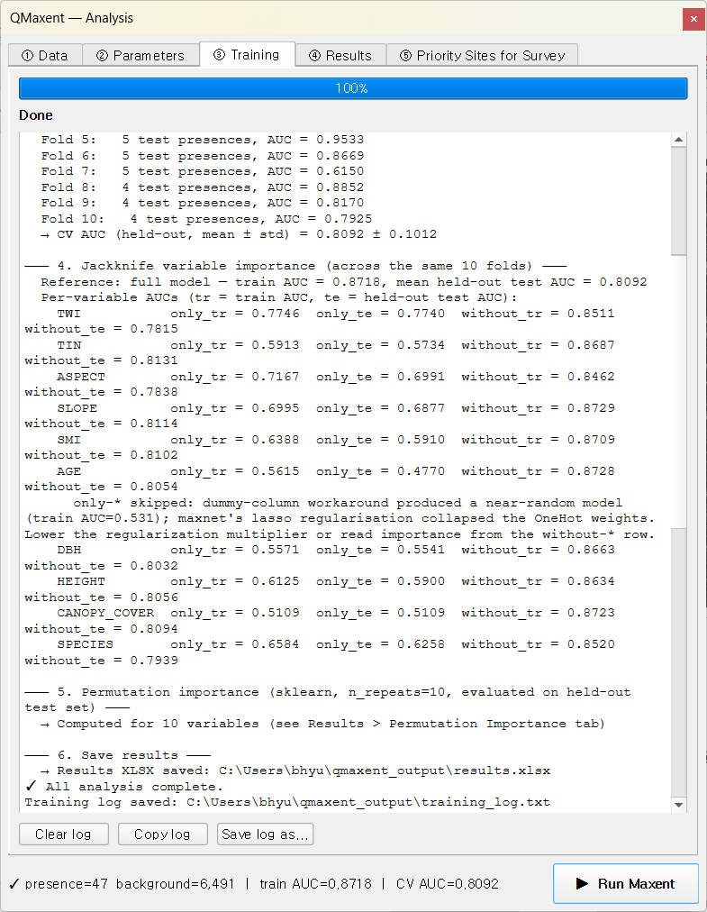
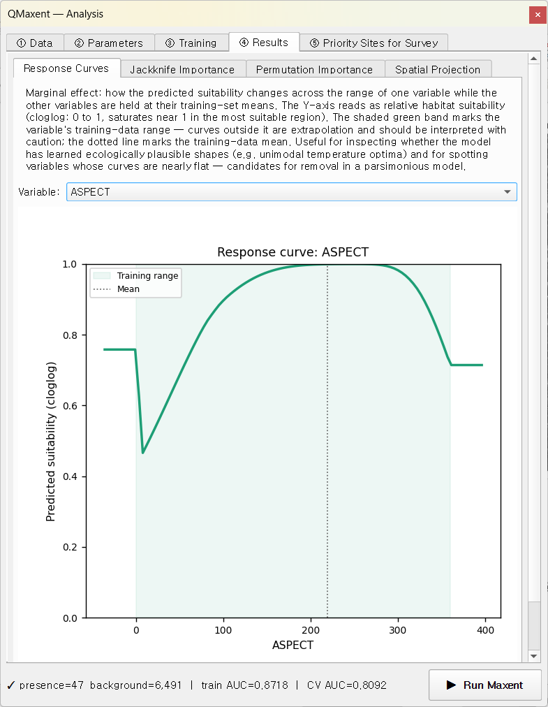
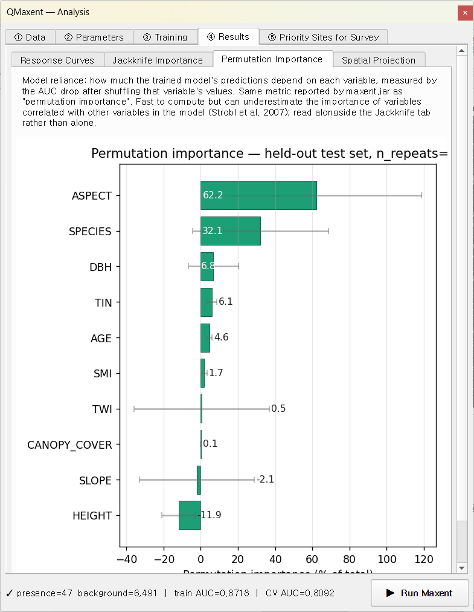

Pitta nympha¶
팔색조 Pitta nympha는 장거리 이동성 명금류로, 다층 구조의 활엽수림 번식지를 선호합니다. 본 예제 자료는 출판된 현장 연구 — Lee et al. (2025, Global Ecology and Conservation 60:e03939) — 의 자료를 재현한 것으로, 경상남도 거제도(거제시)의 둥지 위치를 조사하고 maxnet R(ENMeval 2.0)으로 Maxent 모델을 학습한 사례입니다. 같은 자료를 QMaxent로 재실행하는 데에는 두 가지 목적이 있습니다.
- 소규모 실측 자료(47개 둥지)에 대한 워크 예제 — 연속형 지형 변수와 범주형 임상 변수가 혼합된 현실적 자료.
- maxent.jar와의 구현 간 비교 — 첨부 원고 § 3.3에서 IWLR ↔ coordinate-descent 등치성을 두 설정(Default β=1, Lee-matched β=4)에 대해 정량 비교한 내용을 직접 재현해 볼 수 있습니다.
1. 자료¶
| 레이어 | 타입 | 설명 |
|---|---|---|
pitta_nympha_occurrence |
벡터 점 | 거제도의 둥지 위치 47점 |
TWI |
연속 래스터 | 지형 습윤 지수 |
TIN |
연속 래스터 | 지형 거칠기 |
ASPECT |
연속 래스터 | 사면 방향 (°) |
SLOPE |
연속 래스터 | 사면 경사 (°) |
SMI |
연속 래스터 | 토양 수분 지수 |
AGE |
범주형 래스터 | 영급(1–4) |
DBH |
연속 래스터 | 평균 흉고직경 |
HEIGHT |
연속 래스터 | 평균 수관 높이 |
CANOPY_COVER |
연속 래스터 | 수관 폐쇄도(%) |
SPECIES |
연속 래스터 | 우점수종(수치 코드) |
10개 래스터 전부 동일 격자(EPSG:5186 KGD2002 중부원점, 10 m × 10 m)를 공유합니다. 본 자료는 실제 현장 조사 자료로, 플러그인의 Example Dataset Downloader에는 포함되어 있지 않습니다. 원고 교신저자가 자료의 원본을 보유하고 있습니다(연락: bhyu@knps.or.kr).
2. 자료 적재¶
① Data 탭에서 pitta_nympha_occurrence를 Presence Points Layer
드롭다운에서 선택하고(47점), 프로젝트에서 10개 래스터를 일괄 추가한 뒤,
AGE를 [categorical]로 표시합니다. Check Raster Consistency를
누릅니다.

상태 줄에
✓ All 10 rasters share grid (CRS: EPSG:5186, resolution: 10 × 10)
이 표시됩니다. 출현점은 거제도 중부 산림 능선에 집중됩니다.

3. Lee-matched 매개변수¶
② Parameters 탭에서 Feature Types를 Manual selection으로 전환하고 Linear, Quadratic, Hinge만 체크합니다(Product, Threshold 해제). Regularization multiplier = 4.00으로 설정. Spatial evaluation은 Random K-Fold (Phillips 2006), Folds = 10, seed = 42. Jackknife와 Permutation importance(반복 10회)는 활성화 유지.

이 설정은 Lee et al. (2025)에서 ENMeval이 최적으로 선택한 구성이며, 첨부 원고 § 3.3의 "Lee-matched" 라벨이 가리키는 구성입니다. maxent.jar v3.4.4를 동일 자료에 적용하면 비교 대조군이 산출됩니다(Training AUC = 0.8692 ± 0.0230, 10-fold CV AUC = 0.8128 ± 0.1022). 이는 § 2.3에서 명시한 IWLR ↔ coordinate-descent의 |Δ| < 0.005 micro-convergence 범위 안에 들어옵니다.
4. 학습¶
▶ Run Maxent를 누릅니다. Training 탭이 약 20초 만에 완료됩니다.

하단 상태 줄에
presence=47 background=6,491 | train AUC=0.8718 | CV AUC=0.8092이
표시됩니다.
- Full-data model —
Training AUC = 0.8718(원고 Table 3 Lee-matched 행의 QMaxent 측 수치. maxent.jar = 0.8692, |Δ| = 0.0026 으로 0.005 허용오차 안에 들어옵니다). - Cross-validation — Random K-Fold n=10, seed=42. 통합 평균 ± 표준 편차 = 0.8092 ± 0.1012. 로그에 보이는 fold별 AUC는 0.6150에서 0.9533까지 분포 — Bradypus나 Ariolimax보다 큰 변동성이며, 현장 조사 자료의 작은 표본(fold당 4–5개 검증 출현점)이 만드는 전형적 양상입니다.
범주형 변수가 있을 때의 Jackknife¶
로그에 다른 두 예제에는 없는 진단 메시지가 표시됩니다.
only-*skipped: dummy-column workaround produced a near-random model (train AUC = 0.531); maxnet's lasso regularisation collapsed the OneHot weights. Lower the regularization multiplier or read importance from thewithout-*row.
AGE는 본 스택에서 유일한 범주형 변수입니다. only-this-variable
잭나이프 패스에서 AGE는 one-hot 인코딩되어야 하는데, β = 4의 L1 lasso
페널티가 OneHot 가중치를 거의 0으로 압축해 버립니다 — Maxent가 평가에
사용할 정보가 남지 않습니다. QMaxent는 이 collapse를 감지해 해당
only-* 행을 건너뛰고 사용자에게 평이한 영어로 알립니다. without-*
행은 여전히 정보적이며, AGE의 증분 기여도를 읽는 올바른 위치입니다.
이는 Merow et al. 2013이 기술한 과대 정규화 실패
모드의 정확한 예시입니다. β = 1 Default 구성에서는 의미 있는 only-AGE
AUC가 회복됩니다(본 가이드에는 표시하지 않음).
5. 변수 행동¶
반응 곡선 — ASPECT¶

모델은 북향(약 270°–360°)에 가장 높은 적합도를 할당합니다 — 능선 어깨의 음지·저온·고습 미기후를 선호한다는 팔색조의 알려진 생태에 부합합니다.
Jackknife 중요도¶

ASPECT, TWI, SPECIES가 가장 강한 without-row 신호를 가집니다 —
제거 시 손실이 가장 큰 변수들. AGE의 only-* 막대는 § 4에 설명한
이유로 생략됩니다. AGE의 without-* 순위(~ 0.81)는 중간 위치로,
이것이 정직한 해석입니다.
Permutation 중요도¶
Permutation 패스는 lasso 압축의 영향을 받지 않는 검증 세트에서 각 변수를 평가하므로, AGE를 포함한 10개 변수 모두 직접 비교 가능한 percentage를 얻습니다.

이 β = 4 구성에서 Jackknife without-* 순위와 Permutation 순위의
Spearman ρ는 작게 나옵니다(원고 § 3.3 참조) — 이는 과대 정규화 효과
때문이지 구현 결함이 아닙니다.
6. 우선조사 후보지¶
투영 후 ⑤ Priority Sites for Survey → Discovery 모드에서 거제도 영역에 대한 현장 출장 후보지를 산출합니다. 연구 영역이 Bradypus나 Ariolimax보다 훨씬 좁아서, 적합도 임계값(~ 0.88)과 간격 규칙(기존 출현점에서 1 km, 후보 간 500 m)으로 약 20개 정도의 적정 규모 후보지 목록이 나옵니다.

Nominatim 역지오코딩으로 가용한 한도 내에서 읍 · 면 · 동 단위의 행정 정보가 attribute table에 자동 부착되어, 모델 결과에서 현장 출장 계획까지 한 걸음에 연결됩니다.
7. 이 예제가 시연하는 것¶
- 소규모 실측 자료(47개 출현점, 10개 공변량, 현실적 공간 규모) 에서의 워크플로우.
- 범주형 변수 처리 + 과대 정규화 시 OneHot collapse 진단 메시지.
- Lee-matched (β = 4) 구성 — 첨부 원고가 maxent.jar 수치 호환성 벤치마크에 사용한 바로 그 설정(§ 3.3 / Table 3).
- 이전 예제와 다른 좁은 의미의 우선조사 후보지 활용 — 대륙 규모의 신규 발견이 아닌 알려진 부분 개체군의 표적 재조사.
maxent.jar ↔ QMaxent 정량 비교 수치(Training AUC |Δ| < 0.005, β=1과
β=4 두 구성의 permutation-importance Spearman ρ)는 첨부 원고 § 3.3과
tests/fixtures/pitta_golden_values.json을 참고하세요.